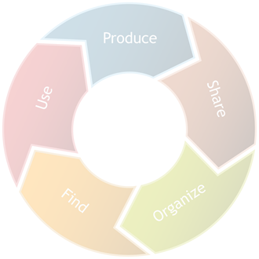
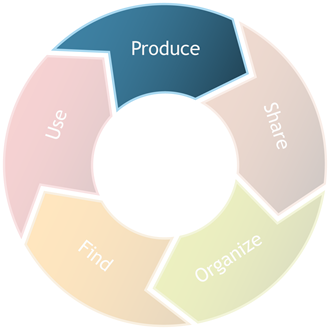
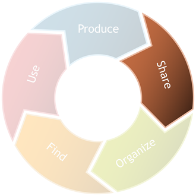
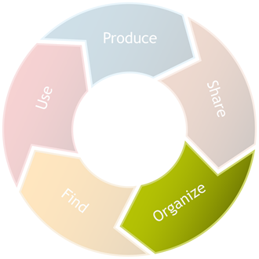
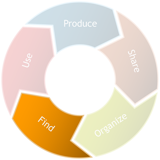
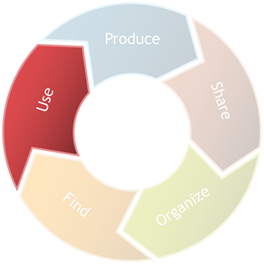
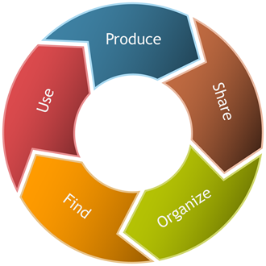

Science Information Life Cycle and Chemical Information
The life cycle of information differs in the Sciences, Social Sciences, and Humanities. This tutorial is designed to help you understand unique characteristics of information production and dissemination in Science so that you can use library resources effectively and efficiently. You will also learn the basics of finding chemical information.
The methods for producing science information
will impact
...how it is published and communicated,
which in turn affects
...what format it is published in and
...where you can find it. With the found information,
you will need to know
...the rules for including it in your research so that you can
produce information, and the cycle begins again.
Click on Produce to begin the tutorial.